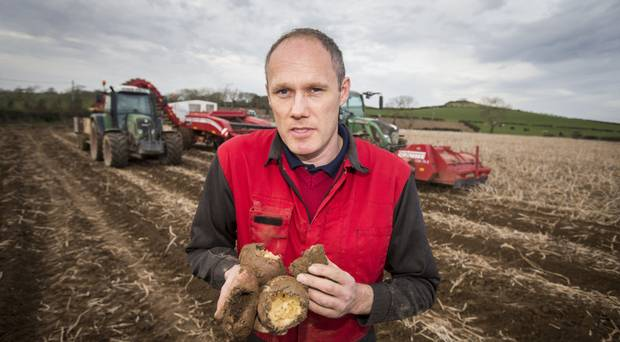

About US
Vin's Idaho Potatoes are proudly grown in Vin's Valley Idaho. We have been delivering photos to American communities since January 2000. All potatoes are washed and clean before delivering. We make sure that we serve our product with 100 % freshness guaranteed. The types of Potato we have are Russet potato, Burbank Potato, Red potato, Yellow potato and sweet potato.

The potato is about 80% water and 20% solids. An 8 ounce baked or boiled
potato has only about 100 calories. The average American eats about 124
pounds of potatoes per year while Germans eat about twice as much. In
1974, an Englishman named Eric Jenkins grew 370 pounds of potatoes from
one plant.
In addition to starch, potatoes contain vitamins, minerals, and fiber.
They're rich in vitamin C, which is an antioxidant. Potatoes were a
life-saving food source in early times because the vitamin C prevented
scurvy.